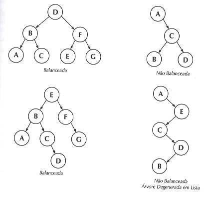
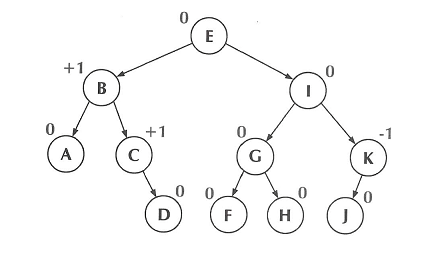
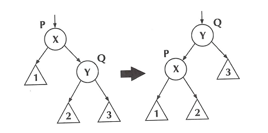
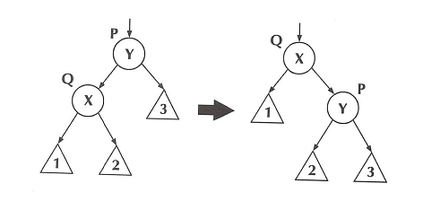
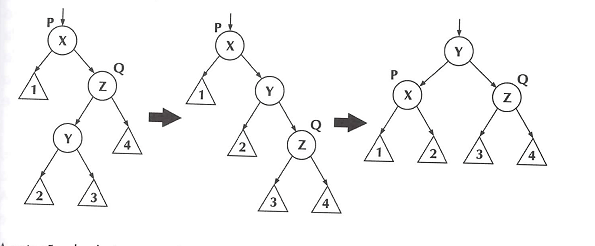
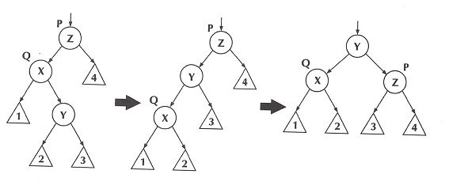

As árvores binárias de pesquisa são construídas de modo a tornar mais eficiente a tarefa de procura de um elemento na árvore: em cada sub-árvore o elemento é procurado, ou à esquerda, ou à direita, mas não em ambos. Para que essa tarefa seja realmente eficiente é necessário que, em cada sub-árvore, o lado esquerdo tenha aproximadamente a mesma altura que o lado direito, ou seja, que a árvore esteja balanceada. Enquanto em uma lista o tempo de procura é proporcional a n (número de elementos), em uma árvore binária balanceada esse tempo cai para aproximadamente log2 n.
Formalmente, se diz que uma árvore está balanceada quando, para cada nó, a altura da sub-árvore da esquerda não difere da altura da sub-árvore da direita em mais de uma unidade. Abaixo apresentamos alguns exemplos de árvores balanceadas e de árvores não balanceadas.
Se uma árvore binária de pesquisa for utilizada apenas para a procura de um elemento, basta construí-la balanceada, usando adequadamente o arquivo em que estão armazenados os dados. Mas na maior parte dos casos, a árvore pode sofrer alterações durante seu uso, pela inserção ou retirada de elementos, que acabam alterando também o balanceamento da árvore. Para manter a árvore balanceada, podem-se adotar duas estratégias diferentes:
a) balanceamento estático: depois de certo tempo de uso, a árvore é destruída, guardando-se os dados em alguma outra estrutura, e depois reconstruída de forma balanceada;
b) balanceamento dinâmico: cada vez que um elemento é retirado ou inserido na árvore, verifica-se se houve desbalanceamento, e neste
caso alteram-se as posições de alguns nós, de modo a restabelecer o balanceamento.
4.5.1 Balanceamento Estático
O balanceamento estático consiste em, depois de certo tempo de uso, destruir a sua estrutura, guardando as informações em alguma outra estrutura, e depois reconstruí-la de forma balanceada. Veremos aqui dois algoritmos:
a) o primeiro percorre a árvore, armazenando os dados em um vetor. Em vez de vetor, na prática pode-se usar uma estrutura dinâmica como uma lista, para que a solução seja mais genérica, ou um arquivo, se a quantidade de dados é grande. Escolhemos aqui um vetor para dar mais clareza à essência do método. Nosso algoritmo apenas constrói o vetor: a destruição da árvore pode ser feita como já foi visto em algoritmos anteriores.
A função abaixo percorre a árvore em ordem infixada e gera o vetor v, que contém em cada elemento uma variável tipo char. O índice i, que percorre o vetor, deve ser inicializado fora da função, com o valor 0.
void GeraVetor(arvore **eainicio) {b)o segundo algoritmo consiste em reconstruir a árvore a partir do vetor originado pelo primeiro algoritmo. A função GeraArvore reconstrói a árvore a partir do vetor gerado pela função anterior. O nó situado na posição média do vetor é feito raiz da árvore e, em seguida, cada uma das metades do vetor recebe tratamento análogo, recursivamente. Na primeira chamada da função, os valores de pos1 e pos2 correspondem aos índices da primeira e da última posição do vetor.
void GeraArvore(arvore **eainicio, int pos1, int pos2) {4.5.2 Balanceamento Dinâmico
O balanceamento dinâmico consiste em reajustar os nós de uma árvore sempre que uma inserção ou remoção provoque seu desbalanceamento. Para exemplificar essa estratégia usaremos a árvore AVL (Adelson-Velskii e Landis).
Para cada nó, define-se um fator de balanceamento (fatbal), que é um número inteiro que pode assumir os seguintes valores, para uma árvore balanceada:
fatbal = -1 quando a sub-árvore da esquerda é uma unidade mais alta que a da direita
fatbal = 0 quando as duas sub-árvores têm a mesma altura
fatbal = 1 quando a sub-árvore da direita é uma unidade mais alta que a da esquerda
Se o fatbal sair do intervalo (-1, + 1), isto significa que a árvore ficou desbalanceada, e deve ser “regulada” (balanceada novamente).
Será analisado agora o processo de regulagem de uma árvore que ficou desbalanceada pela inserção ou remoçãode um novo nó. Há dois nós especialmente importantes nesse processo:
P – é o nó ancestral mais próximo do nó inserido, cujo fatbal fica fora do intervalo (-1,+1) depois da inserção
Q – é o filho de P na sub-árvore onde ocorreu a inserção (no caso de inserção)
Ou:
Q – é o filho de P na sub-árvore oposta a aquela onde ocorreu a remoção (no caso de remoção)
A regulagem pode se dar por uma das quatro seguintes operações:
a)rotação simples à esquerda
b)rotação simples à direita
c)rotação dupla à esquerda
d)rotação dupla à direita
Nos esquemas abaixo, P é o nó que contem o valor X, e Q é o nó que contém o valor Y. Os triângulos numerados representam sub-árvores que eventualmente podem estar ligadas aos nós P e Q.
Rotação simples à esquerda
Neste caso o nó Q sobe para a posição anteriormente ocupada pelo nó P. A sub-árvore 2, que estava à esquerda de Q e continha todos os elementos imediatamente menores que Y, passa a ocupar a posição à direita de P (contém todos os elementos imediatamente maiores que X, e desse modo a ordem dos elementos não se altera).
Rotação simples à direita
Neste caso o nó também o nó Q sobe para a posição anteriormente ocupada pelo nó P. A sub-árvore 2, que estava à direita de Q e continha todos os elementos imediatamente maiores que Y, passa a ocupar a posição à esquerda de P (contém todos os elementos imediatamente maiores que X, e desse modo a ordem dos elementos não se altera).
Rotação dupla à esquerda
A rotação dupla à esquerda é constituída por duas rotações simples: a primeira, à direita, em torno do nó Q, e segunda, à esquerda, em torno do nó P.
Rotação dupla à direita
A rotação dupla à direita é constituída por duas rotações simples: a primeira, à esquerda, em torno do nó Q, e segunda, à direita, em torno do nó P.
Os critérios para a escolha da rotação a ser utilizada são:
a) se o fatbal do nó P for positivo, a rotação deve ser feita para a esquerda, se for negativo, para a direita;
b) se o fatbal de P e o fatbal de Q tiverem o mesmo sinal, a rotação deve ser simples, se tiverem sinais contrários, a rotação deve ser dupla.
Apresentamos a seguir o algoritmo completo para inserir um elemento novo em uma árvore AVL. O algoritmo para retirar um elemento pode ser construído de forma análoga. O tipo árvore continua sendo o mesmo utilizado até agora, contando apenas com mais um campo em cada nó, que é o fatbal (fator de balanceamento, inteiro).
typedef struct nodo {Outra modificação na estrutura da árvore é a criação de um nó descritor (conteúdo não utilizado), cujo ponteiro dir aponta para a raiz da árvore. O nó descritor facilita a função dos ponteiros rastreadores, que são ponteiros que seguem o rastro dos ponteiros que percorrem a árvore. Por exemplo, paux é um ponteiro que percorre a árvore procurando a posição do nó a ser inserido; pant é seu rastreador: guarda sempre a posição do pai de paux na árvore. Os ponteiros pP e pQ ficarão apontando para os nós P e Q vistos anteriormente, que são os pivôs das rotações. O ponteiro pantP é o rastreador de pP. A inicialização da árvore AVL é feita pela função InicializaAVL.
void InicializaAVL (arvoreAVL **eainicio){A variável poschave serve para indicar o lado em que houve a inserção ( +1 para a direita e –1 para a esquerda).
A primeira parte da função InsereAVL verifica se a chave já está presente na árvore, através da variável lógica achou. Se não estiver presente, insere o nó na posição correspondente, de forma análoga à inserção vista em outros tópicos. A novidade nesta parte do algoritmo é o posicionamento do ponteiro pP, que deve ficar apontando para o ancestral mais próximo do nó inserido que já tivesse fatbal <> 0 antes da inserção. O rastreador pantP também é posicionado nesta fase.
Depois de inserido o novo nó, e posicionados pP e pantP, a função InsereAVL chama as funções AjustaFatoresAVL e BalanceiaAVL, que serão examinados separadamente.
void InsereAVL (arvoreAVL *adesc, char dadonovo) {A função AjustaFatoresAVL inicialmente posiciona pQ (aponta para o filho do nó P na direção da inserção) e em seguida ajusta os fatbal's dos nós situados entre pQ e pant. O nó P é o ancestral mais próximo do novo nó, com fatbal <> 0 antes da inserção, ou seja, depois da inserção ficaria com fatbal fora do intervalo permitido. Com a correção da rotação, o fatbal de P volta ao valor anterior. O mesmo acontece com os nós antecessores de P cujo fatbal tivesse sido alterado pela inserção. Assim sendo, não é necessário ajustar os fatbal's desses nós, já que a rotação fará com que automaticamente voltem aos valores anteriores. Por esse motivo o ajuste do fatbal só é efetuado entre Q e o nó apontado por pant.
void AjustaFatoresAVL (){A função BalanceiaAVL identifica o lado em que houve inserção, e atualiza a variável poschave (+1 para direita, -1 para esquerda). A seguir verifica o fatbal de P antes da inserção, podendo ocorrer três situações:
a) fatbal = 0 : significa que não havia nó ancestral do inserido, com fatbal <> 0 antes da inserção, e portanto a árvore não desbalanceou. Nesse caso deve-se corrigir o fatbal de P, que passa a ter o mesmo valor de poschave;
b) fatbal = - poschave : significa que P estava pendendo para o lado contrário ao lado da inserção, e portanto a inserção corrigiu essa inclinação. Nesse caso o fatbal de P deve ser feito igual a zero;
c) fatbal = poschave : significa que P estava pendendo para o mesmo lado da inserção, e portanto a inserção desbalanceou a árvore. Nesse caso deve-se aplicar uma rotação para corrigir a árvore. Se Q pende para o mesmo lado de P, a rotação é simples, se Q pende para o lado contrário ao de P, a rotação deve ser dupla. As funções RotacaoSimples e RotacaoDupla são vistas separadamente.
Ainda dentro da BalanceiaAVL é feito o ajuste do ponteiro que aponta inicialmente para P, e que deve, depois da rotação,
apontar para a raiz da sub-árvore resultante da rotação.
void BalanceiaAVL (){
if (dadonovo < pP->dado)
poschave = -1;
else
poschave = 1;
if (pP->fatbal == 0)
pP->fatbal = poschave;
else
if (pP->fatbal == -poschave)
pP->fatbal = 0;
else {
if (pQ->fatbal * poschave > 0)
RotacaoSimples ();
else
RotacaoDupla ();
if (pantP->dir == pP)
pantP->dir = paux;
else
pantP->esq = paux;
}
}
A função RotacaoSimples executa a rotação simples, para a direita ou para a esquerda, de acordo com o critério visto anteriormente. No final da rotação ela ajusta os fatbal's dos nós P e Q.
void RotacaoSimples (){A função RotacaoDupla executa a rotação dupla, para a direita ou para a esquerda, de acordo com o critério visto anteriormente. No final da rotação ela ajusta os fatbal's dos nós P e Q. Para este ajuste é necessário levar em conta 3 possibilidades para o valor de fatbal do nó que fica sendo a raiz da sub-árvore depois da rotação: pode ser igual a + poschave, igual a zero, ou igual a – poschave.
void RotacaoDupla (){